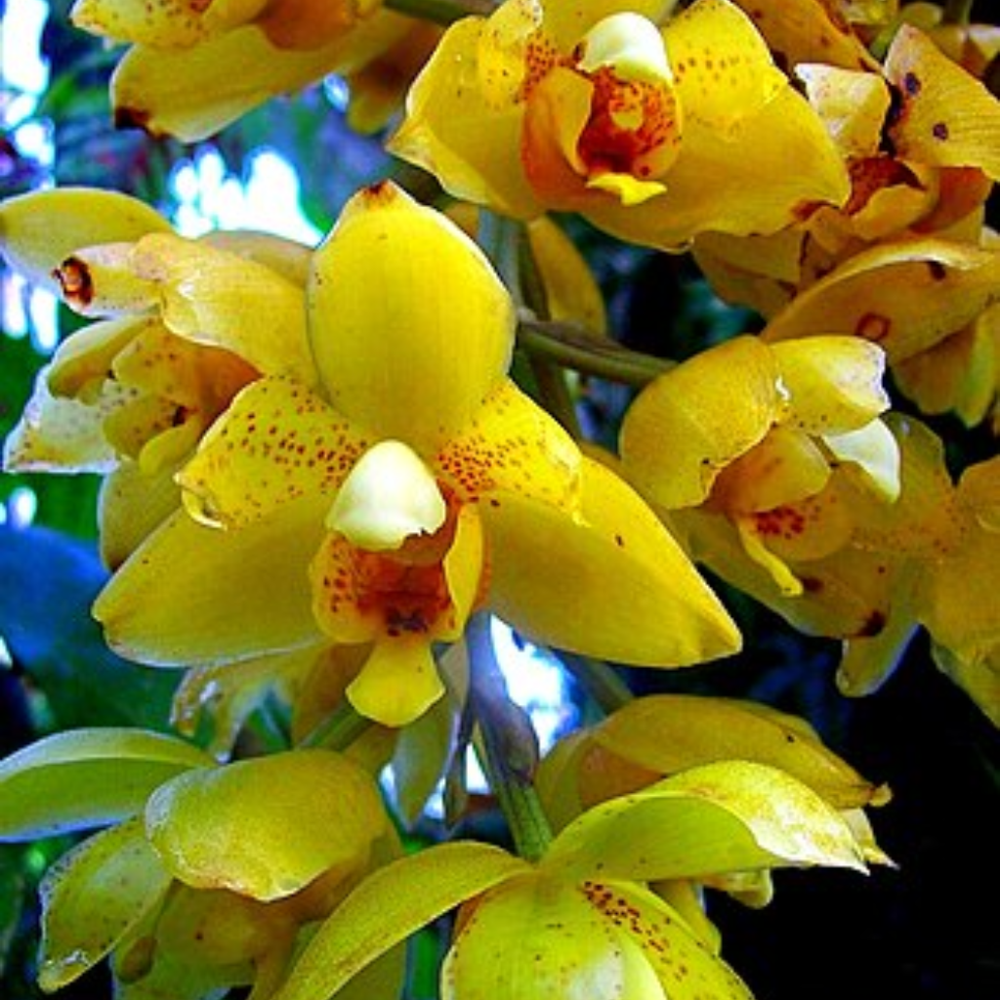
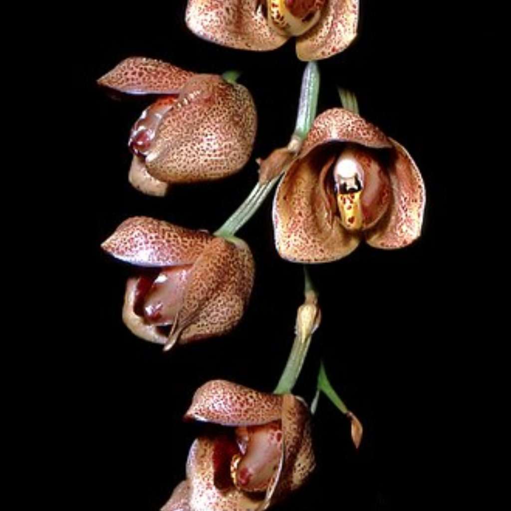
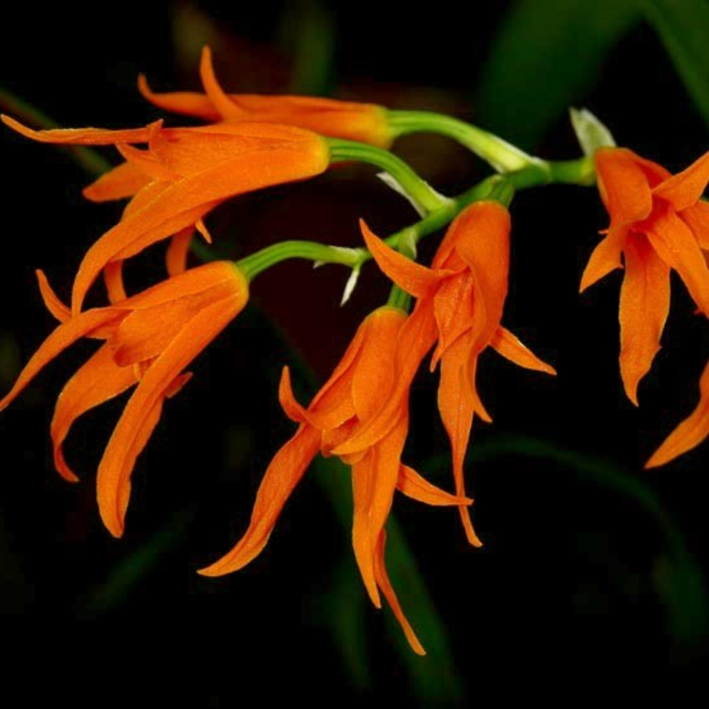
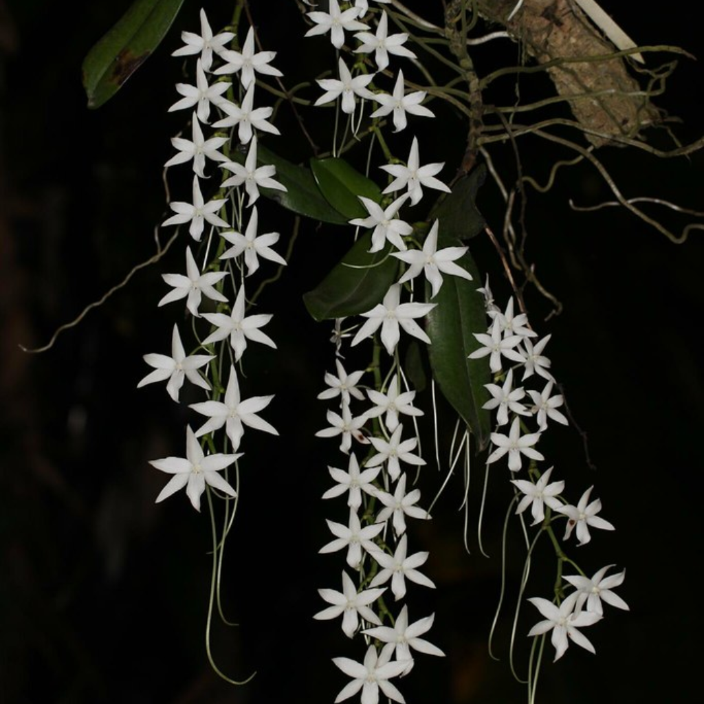
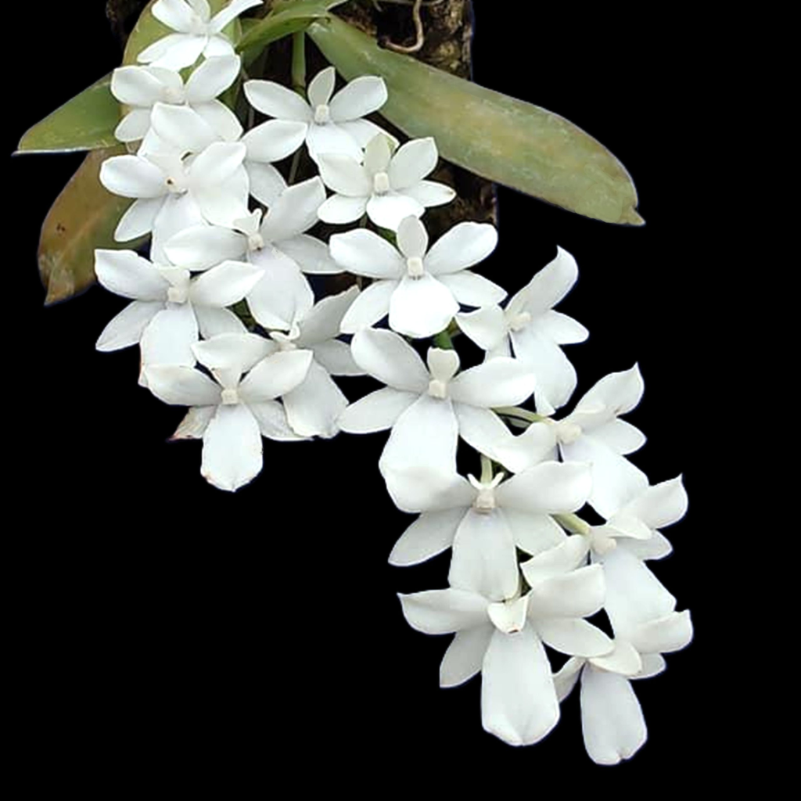
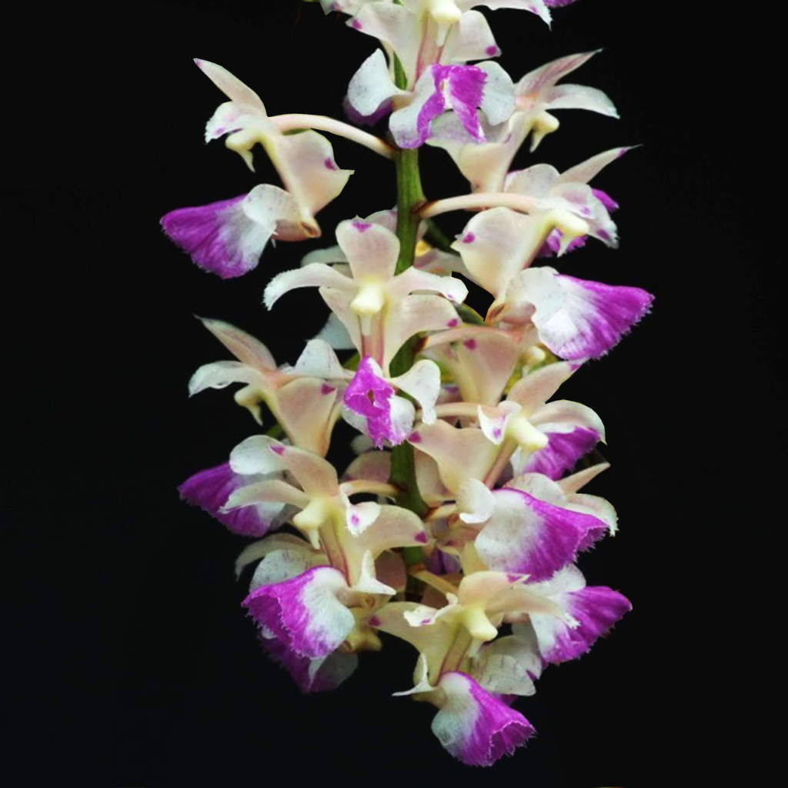
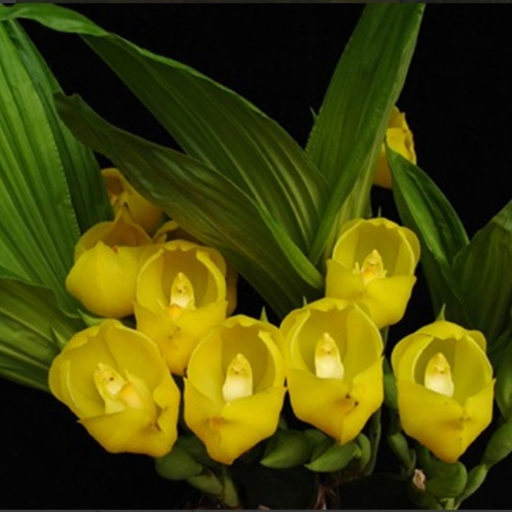

ACACALIS CYANEA
AGANISIA
Cette orchidée épiphyte possède un pseudobulbe d'environ 5 cm de diamètre d'où partent des feuilles de 20 cm de long pour 7 cm de large.

AGANISIA
Cette orchidée épiphyte possède un pseudobulbe d'environ 5 cm de diamètre d'où partent des feuilles de 20 cm de long pour 7 cm de large.

ACINETA
Acineta barkeri est une espèce de plantes à fleurs originaire du Mexique et du Guatemala rencontrée en forêts d'altitude.

ACINETA
Espèce appartenant à la tribu Cymbidieae, sous-tribu Stanhopeinae. L'une des plus répandues du règne végétal tropical.

ONCIDIINAE
Originaire d'Amérique tropicale. Ce genre comprend 17 espèces épiphytes et de très nombreux hybrides colorés.

AERANGIS
Espèce de plantes à fleurs de la famille des orchidées. C'est une orchidée épiphyte de Madagascar et des Comores.

AERANGIS
Petite orchidée épiphyte originaire des forêts ombragées et humides de Madagascar, découverte en 1872.

AERIDES
Orchidée épiphyte d'Asie du Sud-Est se développant avec de magnifiques grappes de fleurs pendantes.

ANGULOA
Aussi appelée orchidée berceau, cette espèce terrestre spectaculaire est originaire d'Amérique du Sud.
ACACALIS CYANEA
Orchidée épiphyte d’Amérique du sud. Se développant sur plaque de liège, dans une ambiance chaude et humide.
Acacalis Cyanea, demande une luminosité de sous bois, une humidité ambiante forte et des températures allant de 18 à 25°C. Etant une épiphyte dans son milieu naturel, elle aime croître sur des support d'écorce (liège, séquoia....) Acacalis Cyanea, déteste la lumière vive et les rayons directs du soleil.